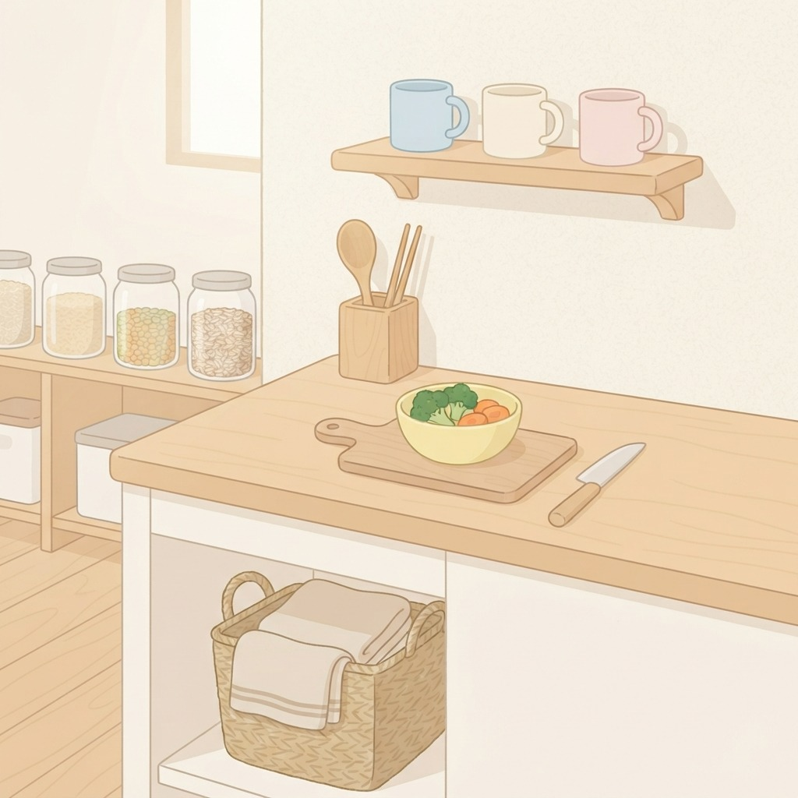
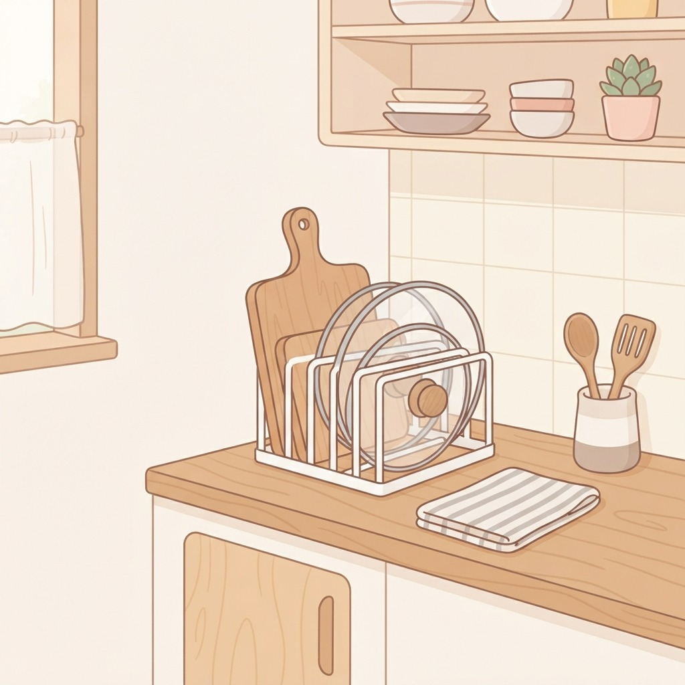
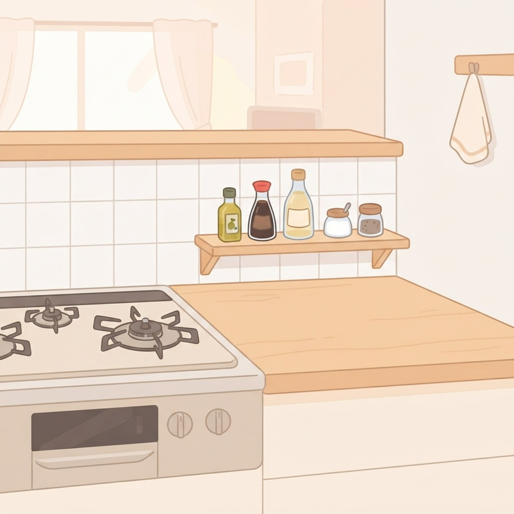
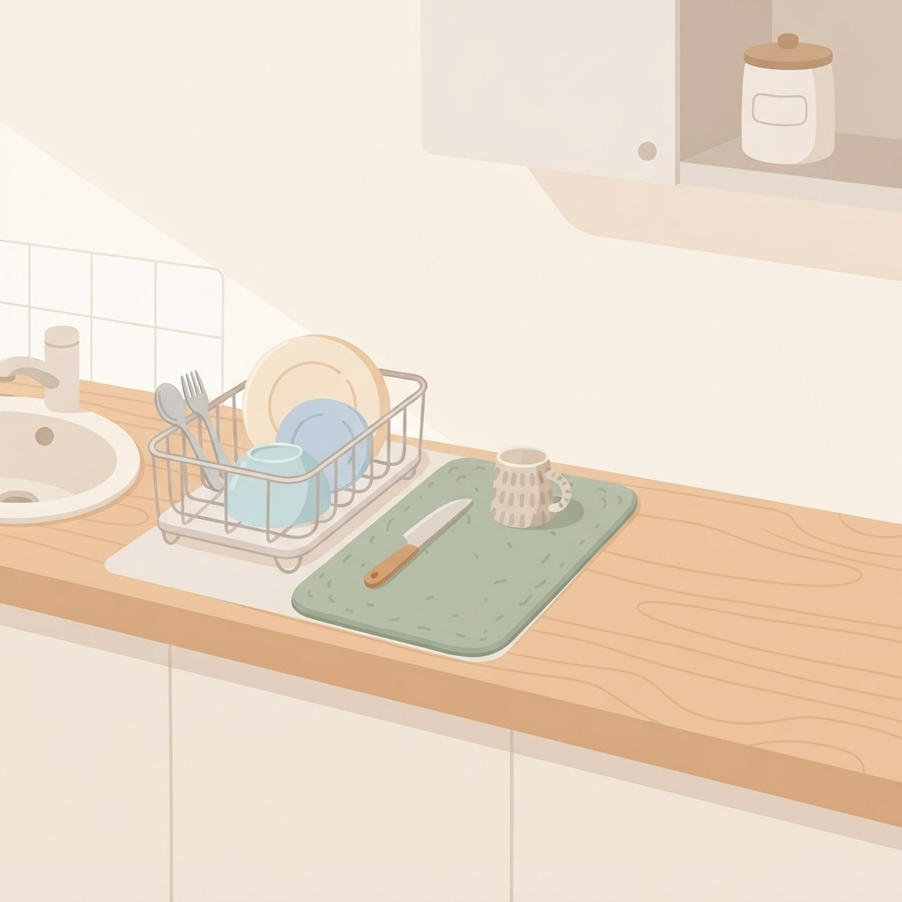
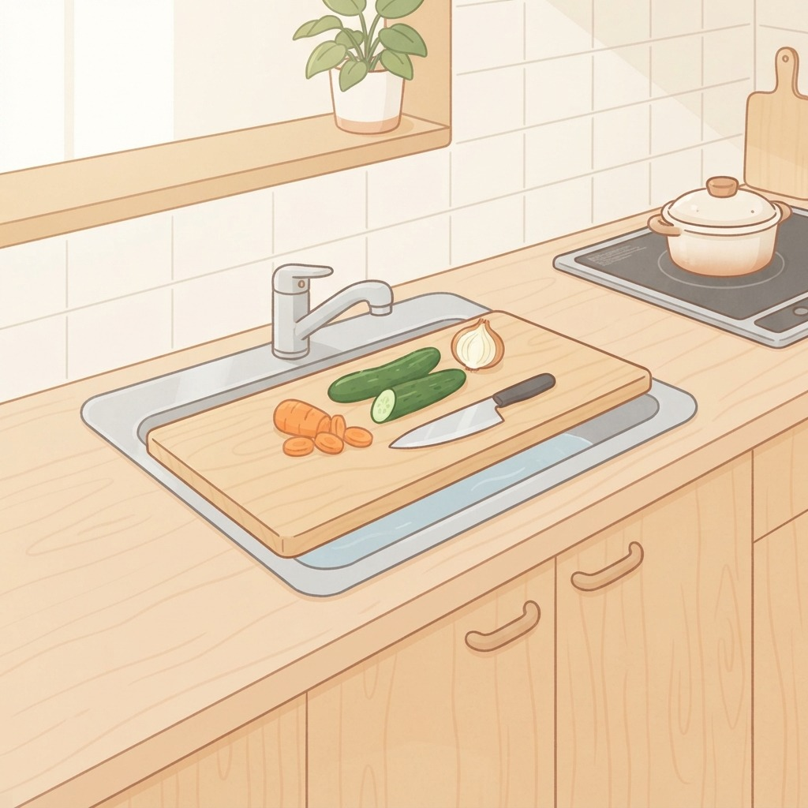

まな板を置く場所がない
作業台を空けるための置き方の見直し

1平面にはモノを置かない
作業台の上は「作業中だけ使う場所」と決めて、待機中のモノは別の場所へ移す。

2毎日使う物ほど立てる
まな板や鍋ぶたは寝かせず立てて。すき間に収まるうえ、乾きも早くなる。

3調味料は火のそばから離す
よく使う数本だけ手前の棚に。出しっぱなしの列が消えると拭き掃除もラク。

4水切りかごの面積を見直す
かごを小さめにするか、吸水マットに替えると、その分がそのまま作業スペース。

5シンクに板を渡す
シンクの幅に合う板やラックを渡せば、切る・置くの一時スペースが増やせる。
毎日のくらしメモは Instagram で更新中
Instagram をフォロー